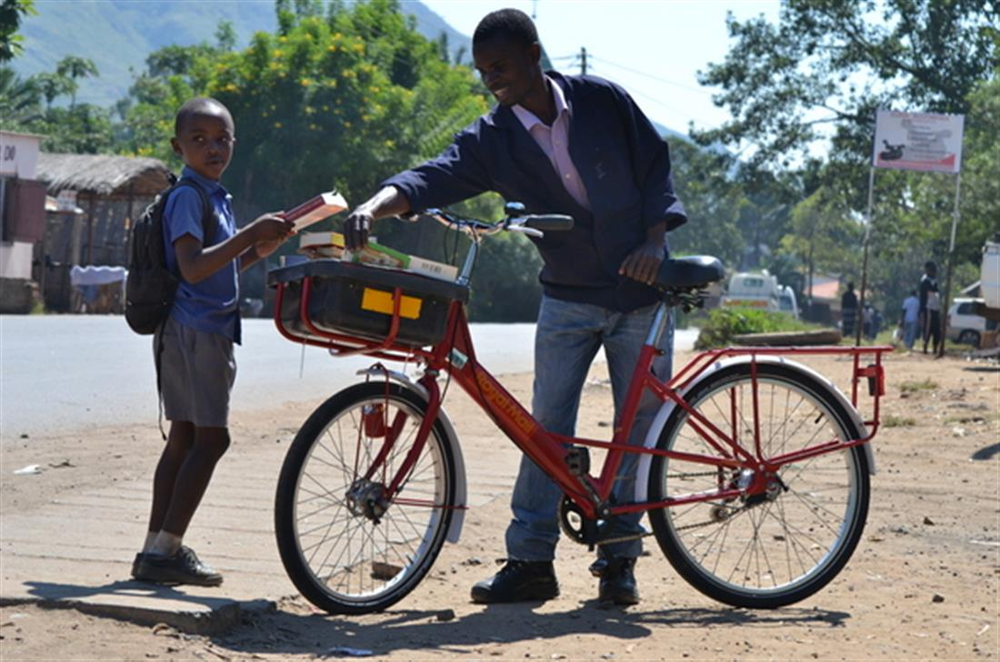
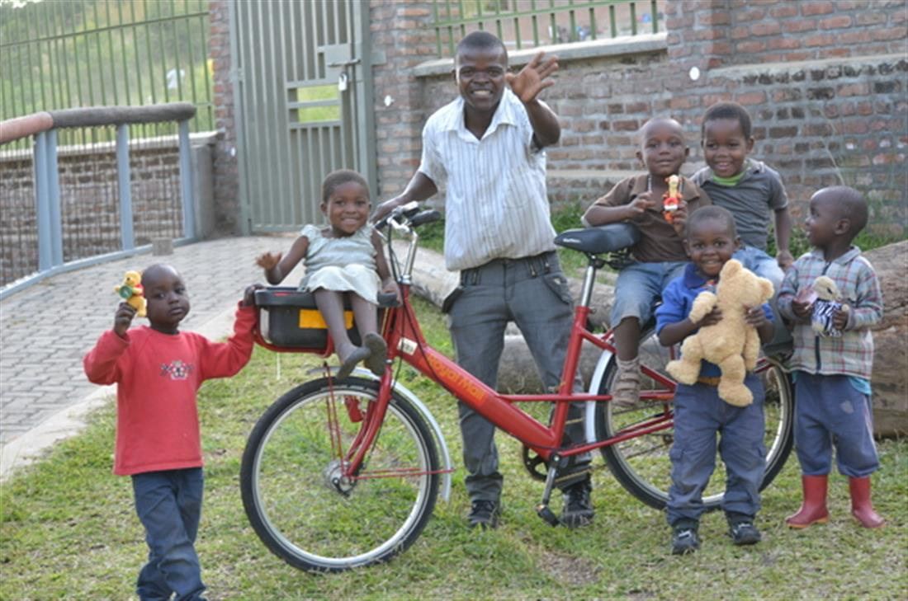
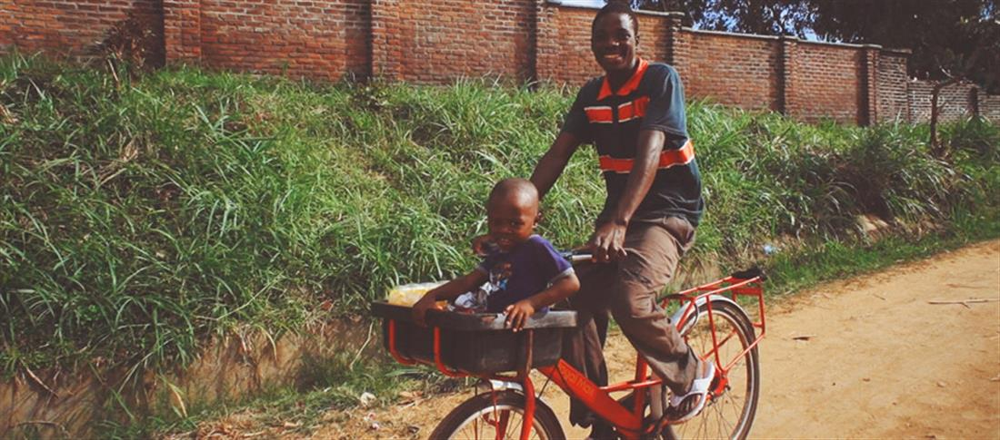
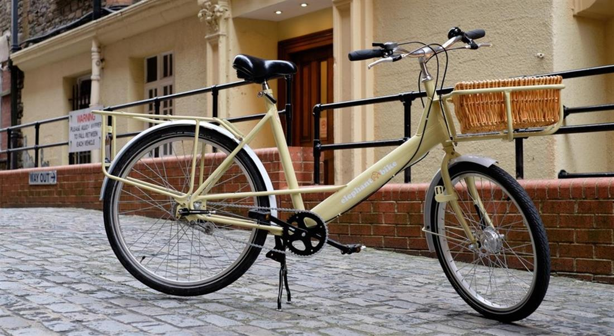

This upcycled old postie’s bike is the ultimate in feelgood cycling – for you and for villagers in Malawi
Sun 30 Jun 2019 06.00 BST
Special delivery: the reconditioned Elephant bike. More than 60% have now been sold and once they are gone, they are gone…
This is the original ‘buy one, give one’ bike. When you buy one, the charity Cycle of Good, which is based in Stoke-on-Trent, donates another one to its social enterprise in Malawi. It’s an ethical version of bogof: you buy one, they give one free! We all ride bikes to feel better. It’s well known cycling is a tonic to both our physical and mental wellbeing. But in Malawi a bike has the power to really transform lives – whether in helping children get to schools that are often miles away or farmers to transport heavy produce to market. Purchasing an Elephant bike also comes with an almost unique customer benefit: you will never suffer buyer’s remorse. The bikes are also a brilliant example of purposeful ‘up-cycling’. All the frames are refurbished British postal bikes that have been saved from landfill. Their dark green paint job covers up the old red and white of the postie’s favourite. The steel frame comes in two sizes and it’s practically indestructible: yours will cope easily with a daily commute or shopping trip; while its African twin, living a parallel life, will have no trouble hauling 20kg loads on rutted roads. And you be assured that both deliver a first-class ride.
Email Martin at [email protected] or follow him on Twitter@MartinLove166
SOURCE: THE OBSERVER
OTHER LINKS:



